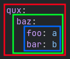

Defining Data in Configs#
In this section, we will cover the basic ways data is stored and written inside config files. Because Terra configs are able to be written in multiple languages, we use our own standardized set of terms to reference things that may be named differently between languages.
Tip
If you are already familiar with data structures and data-serialization languages, feel free to skim over this section and skip forward to the next section.
Types#
The main concept to understand is that of data types or simply types. Types tell us:
How data should be defined
What is expected of that data to contain
How that data will be used
Typically when writing configs the data type will be inferred, but in many cases you need to explicitly tell Terra what type you want to use.
A piece of data defined in a config is something we will call an object. All objects can be categorized by having a type, which is determined by how it is defined in the config. Config files always define a single object.
Integers#
To put this information to use, let’s create create a new config file in
YAML. For our type let’s use the Integer type.
Integers represent whole numbers and as such, are written as whole numbers like so:
We have now created a config that defines an Integer, which represents the number 42.
Floats#
Another numerical type that is slightly different from integers is a
Float. The difference between integers and floats is that floats can
represent numbers that contain decimals:
In many cases, we need to distinguish between integers and floats, as it may not be logical to have numbers with decimals for whatever we’re configuring, having two separate types allows for preventing these situations. Typically config parameters that require integers will not accept a float, but parameters that require a float will accept integers.
Booleans#
The type Boolean defines data that can be in one of two states. This
is almost always used for cases were you want something to be either
true or false and is written as such:
Strings#
We can also represent data like text using a type called String:
Strings are useful for specifying the names of things, and are used everywhere - for example we would need need to use strings to specify what block IDs we want to use for the blocks in a biome.
In some cases you may want to specify a String where it might be
interpreted as another type like Boolean. To explicitly specify an
object is a String, you can wrap it quotes like so:
Maps#
By themselves, integers, floats, and strings aren’t too useful, until we
start assigning labels to them. We can do that using a type called a
Map.
A map is a collection of objects.
Each object in the collection is called a value.
Each value is identified by another object called a key.
Here we will make a new config with type Map, and both the
key and value are of type String:
Since maps are collections of objects, we can list multiple key value pairs within the map like so:
1string: Here is some text.
2pi: 3.14159
3meaning-of-life: 42
1{
2 "string": "Here is some text.",
3 "pi": 3.14159,
4 "meaning-of-life": 42
5}
This is useful because as explained above, configs only contain one main object. By using maps, we are capable of defining multiple objects within a map, as well as being able to identify each of those objects with keys.
Each key within the same map must be unique, the following is invalid:
1duplicated key: value A
2duplicated key: value B
1{
2 "duplicated key": "value A",
3 "duplicated key": "value B"
4}
Ordering#
The ordering of key-value pairs inside a map is not significant, and as such you are free to order them however you’d like.
These two configs are both equivalent:
Lists#
In addition to maps, we can also use a type called a List to
define a collection of objects. Lists differ from maps in that each
item (the term for an object in a list) is not assigned a unique key, but
is instead identified by its position in the list. Because of this,
the order in which you define each object is significant, unlike maps.
Here is a config with type List, which contains multiple Strings:
Nesting Objects#
Because values in maps and items in lists can be of any type, it’s possible to nest maps in maps, lists in lists, lists in maps, and so on.
Tip
Defining something inside something else is commonly referred to as ‘nesting’.
When setting the value of a map, typically it will just fit on the
same line as the key, for example the Float 42 can just be written
in-line with the key, after the colon like so:
key: 42
Types that can span multiple lines, such as maps and lists won’t fit on a single line. For example you may want the following map which spans multiple lines to be a value within another map:
foo: a
bar: b
To nest this map as a value of a key, say baz, in another map, it can be
defined under the key with additional indentation like so:
baz:
foo: a
bar: b
Indentation / indenting text refers to having some consistent number of spaces before each line in text. In YAML, the recommended number of spaces to indent is 2 as shown above.
Lists can be nested similarly like so:
my-list:
- item 1
- item 2
Multiple levels of indentation can be used, for example here is the prior map further
nested under (as the value for the key) qux:
qux:
baz:
foo: a
bar: b
Each map can be visualized by drawing boxes like so:
Illegally defining two values for one key#
A common mistake in YAML is to accidentally assign two different values to the same key.
For example the following is invalid:
key: foo
baz: bar
This is invalid is because there are two competing values being
assigned to key, which are foo and the map containing baz: bar.
Deleting one of the values would make this valid YAML:
key:
baz: bar
Or
key: foo
A config might end up in this invalid state for many reasons.
A key may have been deleted or omitted which could be remedied by re-adding it like so:
key: foo
missing:
baz: bar
Indentation may have been changed by accident, for example removing indentation would make it valid like so:
key: foo
baz: bar
Combining Everything#
We can combine these different types to represent complex data structures, here is an example representing a shopping list, and some appointments using everything we have covered thus far:
1shopping-list:
2 - item: 1L Milk
3 amount: 2
4 cost-per-item: 2.0
5 - item: Carton of Eggs
6 amount: 1
7 cost-per-item: 4.5
8
9appointments:
10 - name: Haircut Appointment
11 date: 24.04.22
12 start-time: 9:45
13 end-time: 10:15
14 - name: Doctor Appointment
15 date: 13.05.22
16 start-time: 3:15
17 end-time: 4:15
1{
2 "shopping-list": [
3 {
4 "item": "1L Milk",
5 "amount": 2,
6 "cost-per-item": 2
7 },
8 {
9 "item": "Carton of Eggs",
10 "amount": 1,
11 "cost-per-item": 4.5
12 }
13 ],
14 "appointments": [
15 {
16 "name": "Haircut Appointment",
17 "date": "24.04.22",
18 "start-time": 585,
19 "end-time": 615
20 },
21 {
22 "name": "Doctor Appointment",
23 "date": "13.05.22",
24 "start-time": 195,
25 "end-time": 255
26 }
27 ]
28}
In this example, the config is of type Map, which contains
two keys shopping-list and appointments. The value of both keys
are of type List, where each item in each list contains a Map.
Language Specific Syntax#
Some data-serialization languages support alternative syntax for
representing the same thing, for example in YAML you can represent maps
and lists using curly braces {} and square brackets []
respectively, where objects are separated by commas , instead. This
can be useful for when you don’t necessarily want to separate objects by
lines and indentation:
1curly-brace-map: {
2 "key-1": "value-1",
3 "key-2": "value-2"
4}
5
6square-bracket-list: [
7 item-1,
8 item-2,
9 item-3
10]
11
12single-line-map: { "key-1": "value-1", "key-2": "value-2" }
13
14single-line-list: [ item-1, item-2, item-3 ]
15
16empty-map: {}
17
18empty-list: []
YAML Anchors#
YAML also provides additional systems like anchors, which allow for easily re-using data within a config and is useful for when you might want to write the same thing multiple times in a config:
1some-list-of-data: &the-data-anchor
2 - item-1
3 - item-2
4
5somewhere-where-data-is-reused: *the-data-anchor
When parsed by the YAML language addon, the value of
somewhere-where-the-data-is-reused will be the same as the list
defined under some-list-of-data.